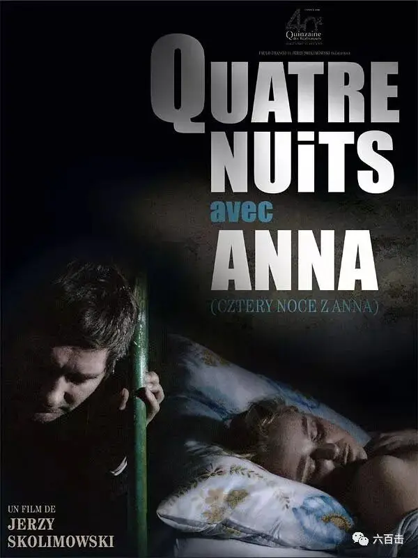
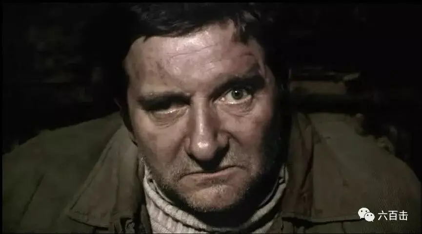
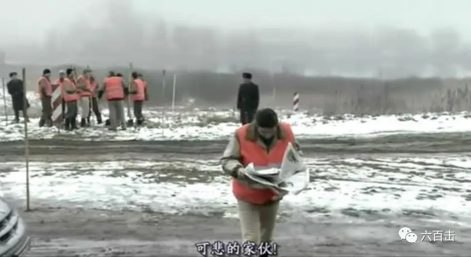
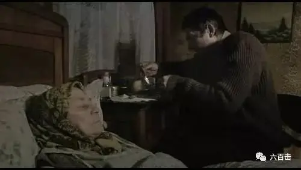
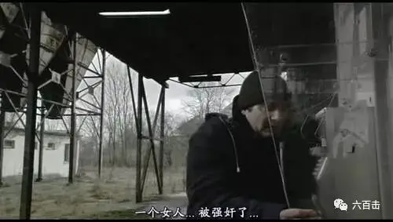
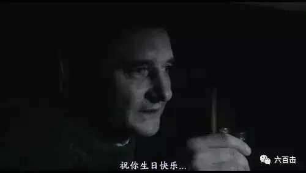
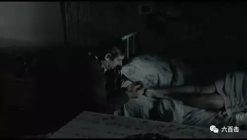
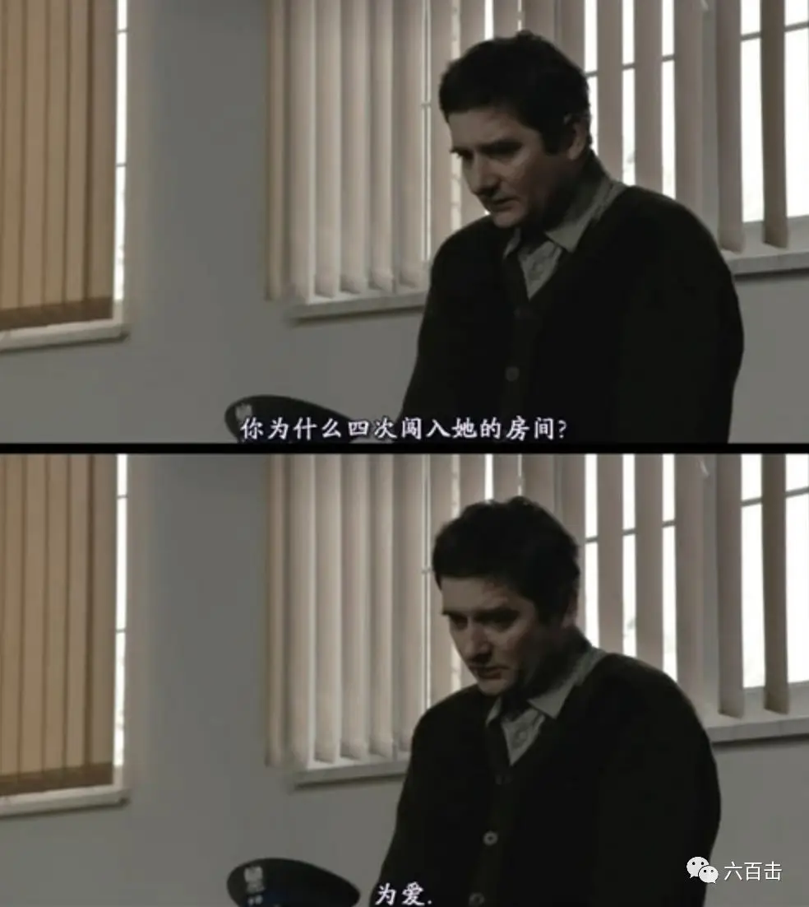
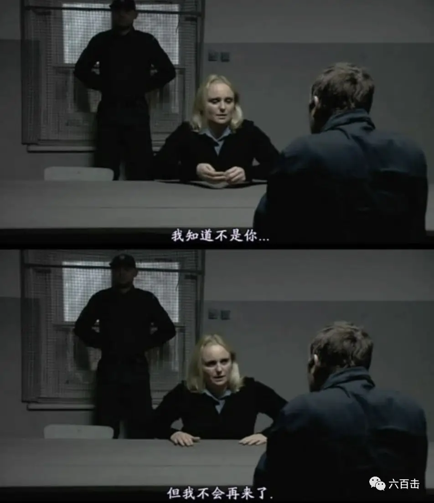
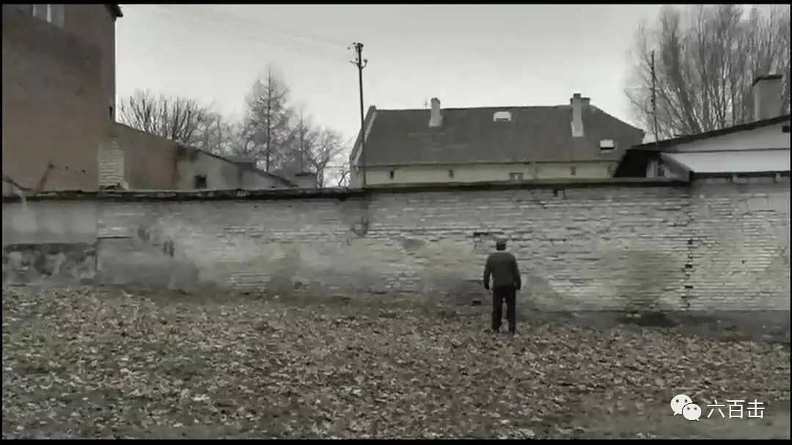

这两天李小璐和贾乃亮炸开了舆论的锅，我相信只要看过相关报道的朋友都难掩愤怒之情。
我也一样，好想痛痛快快地骂一下背叛爱情的人和唱着变态黄段子的某某嘻哈歌手。
但是看到贾乃亮的微博，我打住了这个念头：
能否给我曾经信仰过的爱情，在我生命中最神圣的婚姻，原本想过的一个浪漫且有烟火气的人生，留一点余地，无论未来我们的路该如何，请让我们自己处理，也恳求大家不要再伤害我的家人，我相信雨过总会有天晴！????
我更加明白基耶斯洛夫斯基为什么要从纪录片转向故事片，因为将镜头对准别人的伤口是一件很残忍的事情，我们不应该也没有权利消费别人的痛苦，那是一件极不道德的事。
所以，我们今天只谈电影，一部关于卑微的爱的电影《与安娜的四个夜晚》。

这是一部波兰电影，导演杰兹·斯科利莫夫斯基曾获第73届威尼斯电影节终身成就金狮奖。
本片获2008年波兰电影节最佳美工设计奖、最佳音效奖、导演特别荣誉奖，2008年东京国际电影节评审团奖。
电影描述的故事可以说是一首孤独的夜曲，讲述了一个长相丑陋干着卑贱工作的男人奥卡拉萨，疯狂地爱上了一名护士安娜，后来连续四个夜晚侵入安娜的家中，并最终被警察所抓的故事。
这看上去是一个变态惊悚的故事，再加上北欧式的静默和灰暗的影像风格，更加让人觉得有点毛骨悚然。
但是在导演巧妙的剪辑和平缓流入的情感表达之下，观众对奥卡拉萨的感受会经历厌恶、好奇、理解、同情的变化，最终我们甚至会被奥卡拉萨那种卑微到“没有自己”的爱所感动。
电影主要有四个情节：医院锅炉工人奥卡拉萨的生活、医院护士安娜被强暴、奥卡拉萨守在安娜身边四夜、奥卡拉萨在法庭上被审问。
四个情节发生的时间不同，但是又彼此关联，导演通过巧妙的结构方式为电影增加了悬疑的色彩，通过建立悬念紧紧地抓住观众的注意力。
电影刚开始，奥卡拉萨偷窥安娜，接着去商店买了一把斧子，之后奥卡拉萨从垃圾袋里拿出一个断肢，丢进旁边的火炉里。

不明所以的观众，都会觉得奥卡拉萨十有八九是个变态，再加上丑陋的外表和不体面的装扮，更加确信奥卡拉萨不是什么善类。
这就是导演想要让观众形成对奥卡拉萨的第一印象，就像电影中其他人对奥卡拉萨那样，大家对他充满了嫌弃和避而远之。
接着，警察对奥卡拉萨审问的声音出现，大家纷纷好奇，这个“变态”的奥卡拉萨究竟犯了什么滔天大罪。
于是导演用警察的审问来设置悬念，用剪辑将四个时空的场景相互编织成一个灰暗凄婉的悲剧，这个悲剧强烈地控诉了社会的偏见以及人性的卑劣。
奥卡拉萨是一个木讷孤独的人，生活单调封闭，工作更是非常不体面，他是在医院里烧锅炉，有时候甚至要处理手术的残肢，医院里的人对他充满了鄙视，大家会站的远远地对他说“你怎么能忍受了这个气味呢”。

在这样的偏见之下，一个病人手上的戒指丢了，院长首先怀疑的也是奥卡拉萨，即使最后戒指找到了，院长也并没有诚心实意地向他道歉，只是给了点钱表示安慰。
而在家庭里，他是一个被父母抛弃的孩子，和有病的奶奶生活在一起，在奶奶病逝之后，奥卡拉萨将奶奶所有的旧物焚烧，自己坐在凳子上孤独地拉着手风琴。

这样一个不受所有人待见的人，他却喜欢上了住在对面的护士安娜。
一日，奥卡拉萨撞见安娜被别人强暴，不知所措的他急忙跑去报警，但却被当做了强奸犯，而在法庭上，法官的偏见以及他的笨嘴拙舌让他蒙受了不白之冤。

但是出狱之后，奥卡拉萨并没有怨恨安娜，而是继续爱着安娜。
这位蓬头垢面的底层人注定没有办法像其他人那样正常地追求安娜，于是奥卡拉萨只能偷窥安娜。
在望远镜中看着安娜和朋友一同狂欢庆祝生日，他则在幽暗的角落里默默地举杯祝福安娜。

而在奶奶去世后，奥卡拉萨在家里最后的挂念和温暖也失去了。
他全部的快乐和希望都放在了安娜的身上，他想要更加接近安娜，于是他偷偷地换了安娜窗前的饮料瓶子，在里面掺杂了安眠药，在安娜熟睡后，奥卡拉萨潜入到安娜的房间。
第一个夜晚，在看到安娜美丽的乳房时，奥卡拉萨想要去抚摸，但始终没有去动手，奥卡拉萨将这份爱从情欲中抽离出来，他只是要静静地守在最心爱的人旁边。
这四个夜晚是奥卡拉萨最幸福的时光，他为安娜缝扣子、为安娜做家务，品尝着她房间里的美味。
甚至可以将自己的头轻轻地睡在安娜的枕边，可以为她涂指甲油，可以将自己所有积蓄买来的砖石戒指戴着她的手上，可以在旁边当面祝福安娜生日快乐......

可惜，这四天的幸福很快就流走了，第五天的时候奥卡拉萨被警察所抓，迎接他的不仅是监狱，还有安娜的拒绝。
法庭上：
庭审人员问奥卡拉萨潜入安娜房间有没有强暴安娜
奥卡拉萨说没有。
问他有没有盗窃房间里的东西
奥卡拉萨说没有。
问他那你到底为什么要潜入安娜的房间
奥卡拉萨笨嘴拙舌地说了两个字：为爱

这是奥卡拉萨第一次正式的表白，简短却真诚。
但是安娜拒绝了奥卡拉萨，她将戒指还给奥卡拉萨，并告诉他:
我知道强暴我的人不是你，但我不会再来了

即使这样，奥卡拉萨还是没有被现实打醒，最后一个场景中，奥卡拉萨出狱后，他再次激动地跑向安娜的房间，但是横亘他面前的却是一堵长长的围墙。

最后的场景让我如鲠在喉，难以想象奥卡拉萨当时的心情，也难以想象他将如何面对未来，导演何以用如此病态极端的故事来折磨观众的心。
但坐下来细细一想，也许这个病态的世界最适合用病态去表现，而本片独特的结构也很完美地匹配了这种病态。
电影并不是像我那样按照时间和逻辑顺序去交代来龙去脉，而是将四个时空的场景并列在一起，这种并列有意去跳跃时间和模糊认知。
在整个过程中，我们经常看到的是事情发生的某个片段，在电影结束之前我们无法完全了解奥卡拉萨，而这非常符合我们在真实世界的体验。
我们往往只是看到了别人的片段，却从没有真正去了解一个人。
我们对于某个人尤其是生活中很讨厌的那些人，我们只是根据一两件事情就给别人定了性，这种偏见难道不正是那堵将别人挡在外面的墙么？
但是很可笑的是，心存偏见和拒绝别人的人往往没有爱的能力，而屡屡被伤害的奥卡拉萨却拥有了爱的最高能力：卑微。
很多人会瞧不起这种卑微，觉得爱就应该站在高处而非像个小狗一样仰望别人，但是只有骄傲冷漠的人才会觉得这种爱没有尊严，他们所谓的尊严只是遮在自私外面的面具。
现代人都在崇尚鸡血和进步，我们希望自己的能力越变越强，能够掌管一切。
当我们将这种对能力的认识应用在爱情中时，我们希望自己在爱情中是绝对的控制者，希望对方按照自己喜欢的方式做事，我们也会按照我们喜欢的方式去爱别人。
对那些不够格调的人正眼也不会多看一眼，我们的爱看上去光鲜亮丽、轰轰烈烈，但却充满了各种条件和自我。
你可以想象让这样的人谦卑地放下自我去爱别人会有多难？
人可以很容易向上爬，但却不容易身居高处主动再往低处走，所以才有男人事业有成却抛弃糟糠之妻的故事。
穷的时候没有能力，有能力的时候却没有能力放下能力，什么志趣不同、无法相互理解、身不由己、有更好的选择，这些都是自欺和骗别人的幌子，这才是真正的狗。
而卑微才是最高的能力，它的实质是虚己，是有能力操纵别人但却放弃操纵，是为着别人的益处舍弃一切。
这是一种主动示弱的能力，一种不属于这个病态世界的能力，一种来自天堂的能力。
墙那边的人拒绝了奥卡拉萨和贾乃亮，但却不知道他们已将天堂挡在了墙外。
预告片
关注并回复：与安娜的四个夜晚
获取电影资源
相关推荐：
《芳华》| 他那么好却被伤的如此之深
《潜行者》 | 这是全人类绝无仅有的电影了
《乡愁》 | 没有一个人能够将信仰拍的如此诗意和凝重
这里没有挑逗你眼目情欲的小鲜肉
也没有挑动你肉体情欲的段子
更没有膨胀你今生骄傲的鸡血
我们只在乎那些最质朴真诚的作品
在那里我们才能恢复真正的想象力
我们也坚信这才是我们真正需要的

ID:Six_hundred_hits
长按二维码，一键关注
【六百击】
-END-
电影评论
尽情分享朋友圈

苹果打赏通道